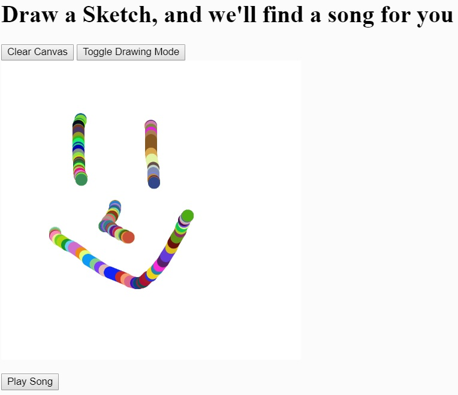

This week's assignment was to do something with music. I was teamed up with my classmate Tito. My original idea was to generate sound based on pixel values in a camera feed, but then Tito told me he'd been playing around with the Spotify API. APIs were something we hadn't really worked with yet, so I thought why not give them a shot? While we originally thought about using object detection to find a song to play on Spotify, I found an instantiation of Doodlenet in P5 while searching the Internet. Doodlenet is a neural network that looks at what you draw and categorizes it, which is pretty sick (the Doodlenet in P5 I found is here).
So, we decided that instead of object detection we would use Doodlenet to pick a song from the Spotify API. It requires getting an authentification token, but after that the code is actually pretty straightforward, and it works well.
Originally I was also trying to use the Google Images API to pull an image from Google Search that would accompany the song we pulled, but after a few hours of playing around I couldn't get that to work. To make up for it, I instead added a few different coloring modes to our project. It's the little things, right?
I've known a lot of people who were always wondering about the correlation between what they saw and what others saw. And I was very close with one of them who happened to be a musician, among other things. So, this is a sketch for that person.
Code can be found here.
Comments? Questions? Concerns? Email me here!